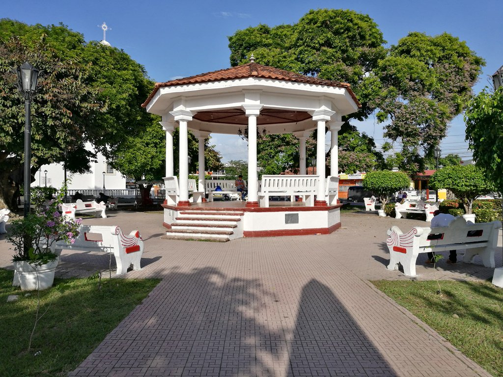

Penonomé es la capital de Coclé y es conocida por su rica historia y tradiciones culturales. Durante el carnaval, esta ciudad se llena de música, bailes y coloridos desfiles.
Ubicación:
Penonomé es la capital de la provincia panameña de Coclé, al oeste de la provincia de Panamá Oeste, en el centro geográfico del país
Atracciones Principales:
- Feria Nacional de la Agricultura
- Cascada El Chorro de las Golondrinas
- El sombrero pintado
- Encendida del arbolito de navidad
Accesibilidad:
La accesibilidad a Penonomé, capital de la provincia de Coclé, está mejorando con la construcción de un puente sobre el Río U. Esta obra facilitará la conexión entre las comunidades de Coclé y Colón, mejorando el tránsito y la accesibilidad a Penonomé.
Actividades Adicionales:
Además de las actividades mencionadas tambien se pueden aprovechar actividades como el turismo agropecuario, realizar ciclismo en las montañas, y visitar lugares iconicos o tambien llamado como turismo cultural.